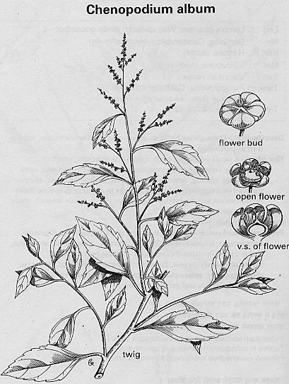

|
ECONOMICALLY
IMPORTANT PLANTS OF INDIA |
| Under-utilized Food and Fodder species and their wild relatives | Contributed by Ms.M.L Annapurna And Dr. Dhanapal, UAS, Bangalore |
Chenopodium album
Taxonomic
Details

----- Correct Name
----- Classification
----- Synonyms
----- Common Names
Other Biological Details
----- Habit and Habitat
----- Diagnostic Features
----- Reproductive Biology
---------- Breeding System
---------- Phenology
---------- Pollinators
---------- Seed Biology
----------Seedling Germination
------ Cultivation
----- Major Pests and Diseases
Economic Potential and Uses
----- Parts Used
----- Uses
----- Harvesting Practices
----- Produce and Products
----- Chemistry
----- Processing Techniques
----- Other uses
----- Economic Potential to the
Country
----- Export Potential
Miscellaneous Information
Literature
Correct
Name : Chenopodium
album Linn.
Family :
Synonyms :
Common Names :
English: All good, Biacon weed, Dirtweed, Dirty Dick, Drought weed, Fat Hen, Frost
bite, Goosefoot, Muck weed, Wild spinach
Sanskrit: Agaralohita, chillika, Kharadala
Hindi: Bathusag, Bathuasag, Chandanbedu, Chilli
Bengali: Chandan betu, Bathusag, Bethuasag
Malayalam:
Marathi:Chakvar, Chivil
Tamil: Parupukkirai
Telugu: Pappukoora
Kannada:Huchuchakkotha
HABIT
& HABITAT:
A polymorphous, white erect herb, up to 3.5 m in height, found wild up to an
altitude of 4,700 m and cultivated throughout India. They are cultivated for
leaf and grain on the North-western hills in the Kulu valley, at 1,500-2,000 m
and in Shimla
Availability
:
Occuring chiefly in cultivated ground, also cultivated as a pot herb.
Status :
DIAGNOSTIC
FEATURES
Stems rarely slender, angled, often striped green, red or purple; leaves
rhomboid, deltoid to lanceolate, upper entire, lower toothed or irregularly
lobed, extremely variable in cultivated forms, 10-15 cm long, petioles often as
long as thick blade; flowers in clusters forming a compact or loosely panicled
spikes in axils; utricles with round, compressed, shining black seeds,
possessing sharp margins.
Pollinators:
Seed Biology :
Seedling Germination:
Cultivation:
The seed is broadcast during April at higher elevations and in Jun-August at
lower elevations. If wide spaced the plants grow vigorously.
MAJOR
PESTS & DISEASES
Pests:
Diseases:
Uses:
The young plant of not more than 20cm is much esteemed as a pot herb.
The tender shoots are eaten raw in salad or with curd; they are also cooked as
vegetable or the cooked shoots are mixed with curd and eaten.
The dried herb is stored for future use. It is also used as fodder, pigeons
consume the plant in large quantities.
The leaves are rich in K and Vit. C.
The seeds are consumed cooked like rice or oatmeal or sometimes along with dhal.
They are considered nutritious and superior to buckwheat (Fagopyrum spp.),
wheat, rice, maize and millets.
In Kulu valley, the seeds are used for the preparation of a dish, phambra;
they are also used to make soup and porridge. The flour is utilized for cakes
and gruel.
In Shimla, the seeds are popularly used in preparing a local fermented beverage soora
as well as an alcoholic drink ghanti,
Seeds are also used for livestock and poultry and also form an important source
of food for other birds; they are also suitable for animal feed.
Harvesting Practices
The crop matures in 135-146 days. The plants are harvested, dried, threshed and
the grain is winnowed.
Yield: The yield varies greatly
Produce and Products
Chemistry
Analysis of the leaves gave: moisture-89.6g; protein-3.7g; fat-0.4g; fibre-0.8g;
other carbohydrates-2.9g; and minerals-2.6g; Calcium- 150mg; Phosphorous-80mg;
Iron-4.2mg; thiamine-0.01mg; riboflavin-0.14mg; niacin-0.6mg; vitamin C-35mg.;
carotene-1740 microgram and energy-30 Kcal/100g. Zinc-24.0 ppm.; Iodine-0.98 ppm.;
fluorine-6.3 ppm.; and Vitamin K-250 ppm. The essential aminoacid composition of
the leaf protein is as follows: leucine-6.56; isoleucine-7.04; lysine-12.0;
methionine-0.80; phenylalanine-1.76; threonine-2.72; valine-4.64; and
Tryptophan-0.32 g/16 gN.
Other
Uses :
Folk Medicine:
The herb is laxative, anthelmintic and cardiotonic. The leaves are antiscorbutic;
they yield ascaridole, which can be used to treat round and hook worms. The
juice is used for treating burns. The powdered plant (25-50%) when mixed with
normal food, is reported to suppress oestrus cycle. A fine powder of the leaves
is dusted to allay irritation. A decoction of the aerial parts, mixed with
alcohol is rubbed on the body affected by arthritis and rheumatism.
The plant improves the appetite; oleaginous, anthelmintic, laxative, diuretic,
aphrodisiac, tonic; usefulin biliousness,"vata" and "kapha",
abdominal pains, eye diseases, throat troubles, piles, diseases of the blood,
the heart, the spleen(Ayurveda).
The plant id used as a laxative. It is used in the form of pot herb in piles.
1.
The wealth of India, A Dictionary of Indian Raw Materials and Industrial
Products, Vol. II. C, Publications and InformationDirectorate, CSIR, New Delhi,
India, 1950. PP.
2. Chenopodium album Linn., 2000, Kirtikar & Basu's Illustrated Indian
Medicinal Plants: Their Usage in Ayurveda & Unani Medicine, Vol. 9,
pp.2855-2858.